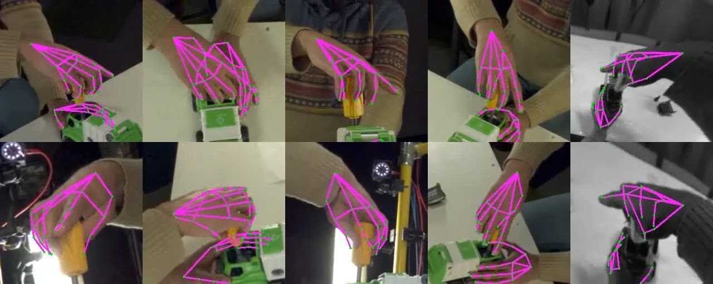
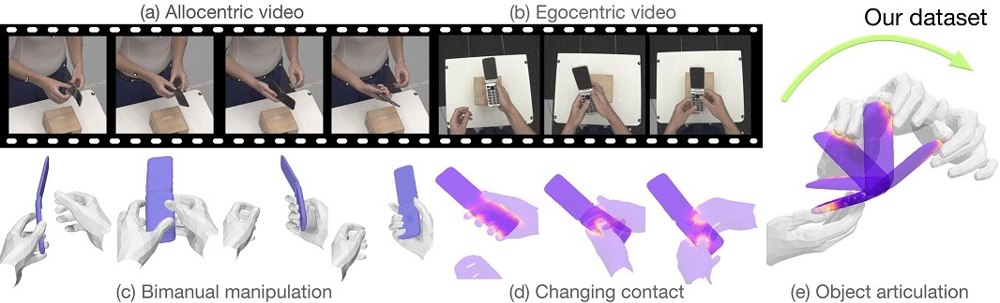

Overview
We present the HANDS23 challenge for hand pose estimation based on AssemblyHands and ARCTIC. In line with this year’s theme, the challenge consists of two tasks and focuses on hand pose estimation on occlusion and interaction scenarios.
Our first task focuses on egocentric 3D hand pose estimation from a single-view image, which has been less explored due to the limited benchmarks for this task but has great potential and attention for enabling AR/VR applications. We use the recently introduced AssemblyHands. It provides mutli-view captured videos of hand-object interaction during assembling and disassembling of toy-vehicles. In particular, it provides both static and egocentric recordings, and auxiliary cues like action, object, or context information for hand pose estimation.
Our second task focuses on consistent motion reconstruction based on ARCTIC. It is a dataset of hands dexterously manipulating articulated objects and contains videos from 8x 3rd-person views and 1x egocentric view. Besides accurate ground-truth 3D hand and object meshes, it also provides detailed contact information between the hands and objects during manipulation.
Winners and prizes will be announced and awarded during the workshop.
Please see General Rules and Participation and Four Tracks below for more details.
General Rules and Participation
We follow the rules of previous challenges and more details can be found in the challenge page.
-
To participate the challenge, please fill the form and accept the terms and conditions.
-
The evaluation server has opened since August 27 for AssemblyHands and September 9 for ARCTIC (Updated September 9).
-
The challenge start on June 15 2023 and end on September 15 2023 for AssemblyHands and September 23 2023 for ARCTIC (Updated September 9).
-
We will contact participants via emails once we have an important update.
-
Submissions details are provided in the challenge page.
-
Each team must register under only one user id/email id. Teams found to be registered under multiple IDs will be disqualified.
-
In order for participants to be eligible for competition prizes and be included in the official rankings (to be presented during the workshop and subsequent publications), information about their submission must be provided to organizers. Information may include, but not limited to, details on their method, synthetic and real data use, architecture and training details. Check previous challenge publication to have an idea of the information needed.
-
Winning methods may be asked to provide their source code to reproduce their results under strict confidentiality rules if requested by organizers/other participants.
-
For each submission, participants must keep the parameters of their method constant across all testing data for a given task.
-
We invite all winners to advertise their methods via any combination of the following: 2-3 page technical report, winner talk, and poster presentation.
Task 1 - Egocentric 3D Hand Pose Estimation
Overview
AssemblyHands is a large-scale benchmark dataset with accurate 3D hand pose annotations to facilitate the study of egocentric activities with challenging hand-object interactions. The dataset includes synchronized egocentric and exocentric images sampled from the recent Assembly101 dataset, in which participants assemble and disassemble take-apart toys. The official website is https://assemblyhands.github.io/.

Row 5: egocentric images from a VR headset
Instructions
Using AssemblyHands, this challenge focuses on egocentric 3D hand pose estimation from a single-view image. The training, validation, and testing sets contain 383,684, 32,179, and 62,043 images, respectively. We provide the following annotations:
- 3D hand keypoint coordinates (21 keypoints for each hand)
- Hand bounding boxes
- Camera intrinsic & extrinsic matrix for 4 egocentric cameras attached to the headset
For a fair comparison, please note the following rules:
Rules
- DO NOT use any other data from Assembly101 that are not part of the training set for this challenge
-
But, it is permitted to use Assembly101's auxiliary data that correspond to the training set, such as
- exocentric videos (RGB)
- context cues like action labels and object category information
-
But, it is permitted to use Assembly101's auxiliary data that correspond to the training set, such as
- It is permitted to use other sources of publicly available datasets
- It is permitted to use hand mesh models (e.g., MANO)
- DO NOT use the validation set for training or fine-tuning
- It is permitted to use multi-view egocentric images as input. Note that it is possible the hand is sometimes visible only from a single camera.
Data download: The download of egocentric images and keypoint annotation, and the examples of a data loader and visualization are implemented in the toolkit: https://github.com/facebookresearch/assemblyhands-toolkit.
Evaluation: We use a standard evaluation metric: MPJPE in a wrist-relative space.
Submission Format (updated on Aug 25): We will evaluate two-hand predictions in world coordinates. Please follow this submission instructions: https://github.com/ut-vision/HANDS2023-AssemblyHands. You can find test images and metadata, and an example of a submission file. Please compress your prediction json into a zip file and upload it to the submission server: https://codalab.lisn.upsaclay.fr/competitions/15149. Our baseline result is listed as the name "NieLin_UTokyo".
Acknowledgment: We thank Dr. Linlin Yang, Prof. Angela Yao (NUS), Dr. Kun He (Meta), and Prof. Yoichi Sato (UTokyo) for helpful discussions on the design of the challenge. This dataset is based on the internship work at Meta Reality Labs, and thanks go to Dr. Fadime Sener, Dr. Tomas Hodan, Dr. Luan Tran, and Dr. Cem Keskin (Meta). We also thank Mr. Nie Lin (UTokyo) for the baseline construction.
Task 2 - Consistent Motion Reconstruction
Overview
Our ARCTIC challenge focuses on the task of consistent motion reconstruction, introduced in our paper. Given a monocular RGB video, the goal of the task is to reconstruct surfaces of two MANO hands and the articulated object at every frame. This task focuses on the consistency of hand-object contact in the reconstructed hand and object surfaces. In this challenge, we use the official splits of the ARCTIC dataset consisting training, validation and test sets (totalled 2.1M images). This challenge will follow the experiment protocol defined in our paper.
More details can be found on our website: https://arctic.is.tue.mpg.de/.

Instructions
Here we briefly summarize the protocol:
- Participants will train on the training set (not the validation set).
- The validation set will be used for local evaluation.
- The validation set will be used for local evaluation.
Participants will use the following data from ARCTIC in this challenge:
- MANO hand pose 3D annotation (training only)
- Articulated object poses 3D annotation (training only)
- Pre-defined bounding boxes around the object for network inputs
- Camera extrinsics (not intrinsics in allocentric setting)
Sub-Tasks: Since ARCTIC contains 8x 3rd-person views and 1x egocentric view, we hosts two sub-tasks for this challenge: allocentric task and egocentric task. In the former task, participants should use the 3rd-person images for training and evaluation. For the latter task, during training, participants can use all images from the training set (including 3rd-person views). However, during evaluation, only the egocentric view images are used. See Evaluation Protocol in our paper. Since the two sub-tasks have the same formulation in terms of input (RGB image) and outputs (hand and object parameters), participating both sub-tasks is simply a matter of changing the training and validation sets. Therefore, we encourage the participants to submit to both sub-tasks. If one is only interested in one sub-task, she can simply not submit results on the other sub-task.
5-Minute Talk
Rules
For a fair comparison, please note the following rules:
- Only ARCTIC training set is allowed to be used as 3D supervision for training, that means:
- The ARCTIC validation set cannot be used to train the model.
- Annotations from external datasets cannot be used for training.
- The model cannot assume groundtruth camera intrinsics for allocentric setting.
- Participants may be requested to submit their code for checking potential rule violation.
- The code should be reproducible for the organizers.
- The reproduced results from the code should not deviate from the reported results.
- If requested for inspection, participants may not be considered if organizers cannot reproduce the reported results.
Participants violating any rules may not be considered in the challenge. Feel free to contact the organizer (`zicong.fan@inf.ethz.ch`) for clarification.
Getting started:
- Ensure that you are registered to the challenge via our Google Form.
-
Download data and setting up code for training model using our code.
- The repository includes code for downloading data, training models, visualizing predictions, and evaluating results.
- This also includes dataset documentation.
- Instructions for online evaluation will come soon. Meanwhile, you are free to use the validation set for offline evaluation and get started.
If you encountered any technical problems, feel free to open an issue in our repo.
Evaluation:
- We will use the Contact Deviation (CDev) metric defined in our paper for evaluation.
-
We will use the MANO and pre-defined articulated object topologies for evaluation, that means:
- For submission convenience, if one directly regresses meshes instead of MANO parameters, she needs to fit MANO and object models to the regressed meshes. The fitted parameters will then be submitted to the test set evaluation server.
- Participants are free to decimate the hand and object meshes if needed, however, the test server will use the original meshes for evaluation.
Submission Instruction: See here.
Updated deadline for ARCTIC submission: Sept 23, 23:59 AoE.
Clarification:
- The given code uses groundtruth instrinsics for the egocentric setting but not the allocentric (see here). To be compatible to our baselines, you may assume instrinsic in egocentric setting.
- In the test set, we do not assume groundtruth wrist depth during evaluation.
Acknowledgement:
Constructing ARCTIC was a huge undertaking. The authors deeply thank: Tsvetelina Alexiadis (TA) for trial
coordination; Markus Höschle (MH), Senya Polikovsky, Matvey Safroshkin, Tobias Bauch (TB) for the capture
setup;
MH, TA and Galina Henz for data capture; Nima Ghorbani for MoSh++; Priyanka Patel for alignment; Leyre Sánchez
Vinuela, Andres Camilo Mendoza Patino, Mustafa Alperen Ekinci for data cleaning; TB for Vicon
support; MH and
Jakob Reinhardt for object scanning; Taylor McConnell for Vicon support, and data cleaning
coordination;
Benjamin Pellkofer for IT/web support; Neelay Shah for evaluation server. We also thank Adrian Spurr and Xu
Chen
for insightful discussion. OT and DT were partially supported by the German Federal Ministry of Education and
Research (BMBF): Tübingen AI Center, FKZ: 01IS18039B". DT’s work was partially performed at the MPI-IS.
Our visualization benefits hugely from AITViewer.
Contact
hands2023@googlegroups.com